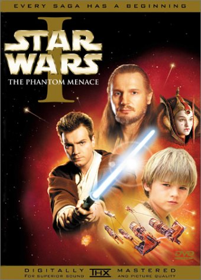
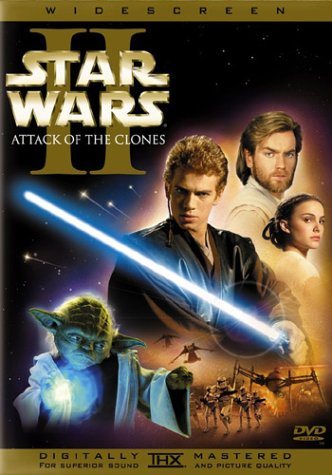
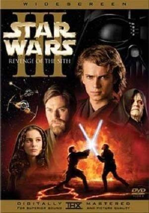
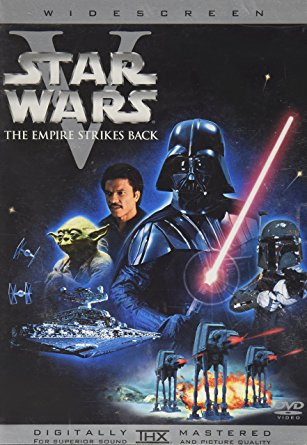
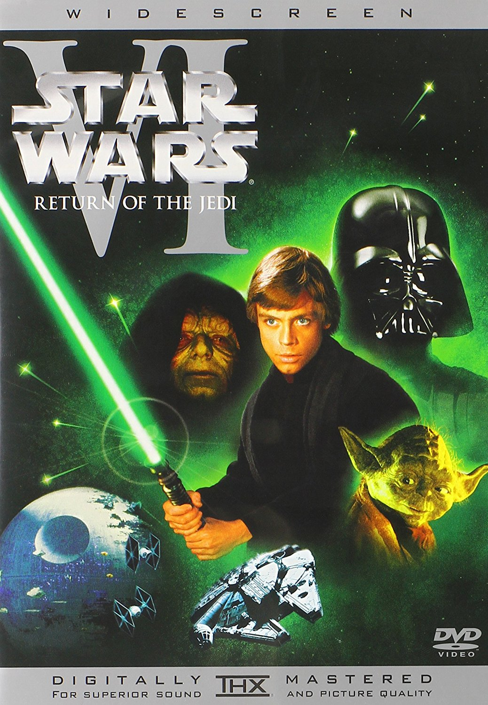
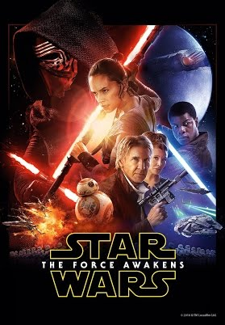
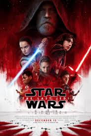

Clique em Um Filme
|  |  |  |
 |
 |  |
|  |  |  |
Star Wars: Episódio 1 - A Ameaça Fantasma
Quando a maquiavélica Federação Comercial planeja invadir o pacífico planeta Naboo, o guerreiro Jedi Qui-Gon Jinn (Liam Neeson) e seu aprendiz Obi-Wan Kenobi (Ewan McGregor) embarcam em uma aventura para tentar salvar o planeta. Viajam com eles a jovem Rainha Amidala (Natalie Portman), que é visada pela Federação pois querem forçá-la a assinar um tratado político. Eles têm de viajar para os distantes planetas Tatooine e Coruscant em uma desesperada tentativa de salvar o mundo de Darth Sidious (Ian McDiarmid), o demoníaco líder da Federação que sempre surge em imagens tridimensionais (a ameaça fantasma). Durante a viagem, Qui-Gon Jinn conhece um garoto de nove anos que deseja treiná-lo para ser tornar um Jedi, pois o menino tem todas as qualidades para isto. Mas o tempo revelará que nem sempre as coisas são o que aparentam.
Star Wars: Episódio 2 - Ataque dos Clones
Dez anos após a tentativa frustrada de invasão do planeta Naboo, Obi-Wan Kenobi (Ewan McGregor), Anakin Skywalker (Hayden Christensen) e Padmé Amidala (Natalie Portman) estão juntos novamente. Neste período de tempo Obi-Wan passou de aprendiz a professor dos ensinamentos jedi para Anakin, sendo que ambos foram destacados para proteger a agora senadora Amidala, que tem sua vida ameaçada por facções separatistas da República, que ameaçam desencadear uma guerra civil intergalática. Com o passar do tempo surge um romance proibido entre Anakin e Amidala, pois os cavaleiros jedi não têm permissão para se apaixonarem.
Star Wars: Episódio 3 - A Vingança dos Sith
As Guerras Clônicas estão em pleno andamento e as diferenças entre o Conselho Jedi e o Chanceler Palpatine (Ian McDiarmid) aumentam cada vez mais. Anakin Skywalker (Hayden Christensen) mantém um elo de lealdade com Palpatine, ao mesmo tempo em que luta para que seu casamento com Padmé Amidala (Natalie Portman) não seja afetado por esta situação. Seduzido por promessas de poder, Anakin se aproxima cada vez mais de Darth Sidious (Ian McDiarmid) até se tornar o temível Darth Vader. Juntos eles tramam um plano para aniquilar de uma vez por todas com os cavaleiros jedi.
Star Wars: Episódio 4 - Uma Nova Esperança
Luke Skywalker (Mark Hammil) sonha ir para a Academia como seus amigos, mas se vê envolvido em uma guerra intergalática quando seu tio compra dois robôs e com eles encontra uma mensagem da princesa Leia Organa (Carrie Fisher) para o jedi Obi-Wan Kenobi (Alec Guiness) sobre os planos da construção da Estrela da Morte, uma gigantesca estação espacial com capacidade para destruir um planeta. Luke então se junta aos cavaleiros jedi e a Hans Solo (Harrison Ford), um mercenário, para tentar destruir esta terrível ameaça ao lado dos membros da resistência.
Star Wars: Episódio 5 - O Império Contra-Ataca
As forças imperais comandadas por Darth Vader (David Prowse) lançam um ataque contra os membros da resistência, que são obrigados a fugir. Enquanto isso Luke Skywalker (Mark Hamill) tenta encontrar o Mestre Yoda, que poderá ensiná-lo a dominar a "Força" e torná-lo um cavaleiro jedi. No entanto, Darth Vader planeja levá-lo para o lado negro da "Força".
Star Wars: Episódio 6 - O Retorno de Jedi
O imperador (Ian McDiarmid) está supervisionando a construção de uma nova Estrela da Morte. Enquanto isso Luke Skywalker (Mark Hamill) liberta Han Solo (Harrison Ford) e a Princesa Leia (Carrie Fisher) das mãos de Jaba, o pior bandido das galáxias. Luke só se tornará um cavaleiro jedi quando destruir Darth Vader, que ainda pretende atraí-lo para o lado negro da "Força". No entanto a luta entre os dois vai revelar um inesperado segredo.
Star Wars: Episódio 7 - O Despertar da Força
Décadas após a queda de Darth Vader e do Império, surge uma nova ameaça: a Primeira Ordem, uma organização sombria que busca minar o poder da República e que tem Kylo Ren (Adam Driver), o General Hux (Domhnall Gleeson) e o Líder Supremo Snoke (Andy Serkis) como principais expoentes. Eles conseguem capturar Poe Dameron (Oscar Isaac), um dos principais pilotos da Resistência, que antes de ser preso envia através do pequeno robô BB-8 o mapa de onde vive o mitológico Luke Skywalker (Mark Hamill). Ao fugir pelo deserto, BB-8 encontra a jovem Rey (Daisy Ridley), que vive sozinha catando destroços de naves antigas. Paralelamente, Poe recebe a ajuda de Finn (John Boyega), um stormtrooper que decide abandonar o posto repentinamente. Juntos, eles escapam do domínio da Primeira Ordem.
Star Wars: Episódio 8 - Os Últimos Jedi
Após encontrar o mítico e recluso Luke Skywalker (Mark Hammil) em uma ilha isolada, a jovem Rey (Daisy Ridley) busca entender o balanço da Força a partir dos ensinamentos do mestre jedi. Paralelamente, o Primeiro Império de Kylo Ren (Adam Driver) se reorganiza para enfrentar a Aliança Rebelde.
Rogue One - Uma Hístoria Star Wars
Ainda criança, Jyn Erso (Felicity Jones) foi afastada de seu pai, Galen (Mads Mikkelsen), devido à exigência do diretor Krennic (Ben Mendelsohn) que ele trabalhasse na construção da arma mais poderosa do Império, a Estrela da Morte. Criada por Saw Gerrera (Forest Whitaker), ela teve que aprender a sobreviver por conta própria ao completar 16 anos. Já adulta, Jyn é resgatada da prisão pela Aliança Rebelde, que deseja ter acesso a uma mensagem enviada por seu pai a Gerrera. Com a promessa de liberdade ao término da missão, ela aceita trabalhar ao lado do capitão Cassian Andor (Diego Luna) e do robô K-2SO.
Sobre
Star Wars é uma franquia do tipo space opera estadunidense criada pelo cineasta George Lucas que conta com uma série de oito filmes de fantasia científica e um spin-off. O primeiro filme foi lançado apenas com o título Star Wars em 25 de maio de 1977, e tornou-se um fenômeno mundial inesperado de cultura popular, sendo responsável pelo início da "era dos blockbusters": Super produções cinematográficas que fazem sucesso nas bilheterias e viram franquias com brinquedos, jogos, livros, etc. Foi seguido por duas sequências, The Empire Strikes Back e Return of the Jedi, lançadas com intervalos de três anos. Esta primeira trilogia segue o trio icônico: Luke Skywalker, Han Solo e Princesa Leia, que luta na Aliança Rebelde para derrubar o tirano Império Galáctico; paralelamente ocorre a jornada de Luke para se tornar um cavaleiro Jedi e a luta contra Darth Vader, um ex-Jedi que sucumbiu ao Lado Sombrio da Força e ao Imperador.
Depois de 16 anos sem filmes novos lançados, uma nova trilogia chamada de prequela começou em 1999 com The Phantom Menace. Esta volta no tempo para contar como Anakin Skywalker se transformou em Darth Vader e acompanha a queda da Ordem Jedi e da República Galáctica substituída pelo Império. Sendo também lançada com intervalos de três anos, com o último lançado em 2005. As reações à trilogia original foram extremamente positivas, enquanto a trilogia prequela recebeu reações mistas tanto da crítica especializada como do público. Mesmo assim, todos os filmes foram bem sucedidos nas bilheterias e receberam indicações ou ganharam prêmios no Óscar.